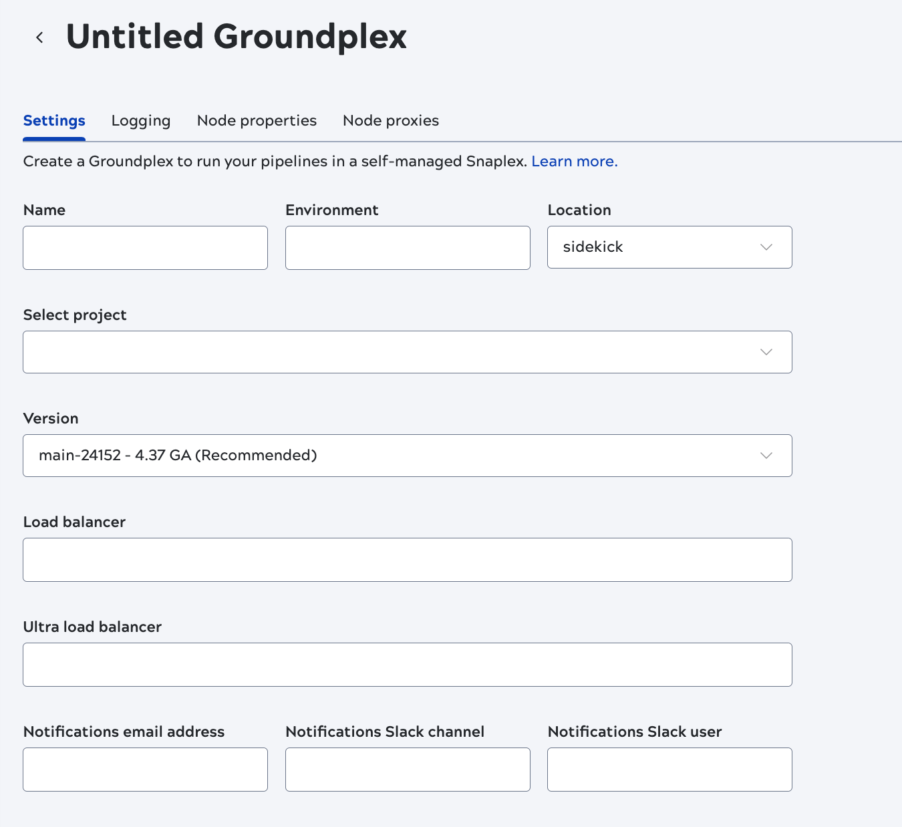

Add a Groundplex
Add a Groundplex in Admin Manager
The Snaplexes screen allows Environment admins to create a Groundplex, add nodes to a Groundplex, and edit the Snaplex details.
From the Snaplexes page, click Add Snaplex to open the dialog for creating a Groundplex:

The general steps for creating a Groundplex include:
- Specify the details in the Settings, Logging, Node properties, and Node proxies tabs to configure the Groundplex.
- Click Save. The new Groundplex is added to the Snaplex list.
-
The Downloads tab displays after the Snaplex is created. Download the installation files and install the Groundplex by following environment-specific installation procedures.
For detailed descriptions of the fields on each tab refer to the following table.
- Settings
- Logging
- Node properties
- Node proxies
| Field/Field set | Description |
|---|---|
| Name |
Specify a unique name for the Groundplex. The name must not exceed 100 characters and can include characters and numbers. We recommend you use a descriptive, memorable name for your Snaplex using alphabets followed by numbers. Default value: None. Example: Test123 |
| Environment |
Specify the value to configure the Snaplex nodes. Default value: None. Example: Test-10k  Important: For existing Snaplexes, stop the nodes before updating
the Environment value. Download the installation
package and restart the nodes for the Environment value to take effect. Important: For existing Snaplexes, stop the nodes before updating
the Environment value. Download the installation
package and restart the nodes for the Environment value to take effect. |
| Location | Select the default option sidekick. Default value: sidekick |
| Select project | Select your target project or shared folder from the dropdown. |
| Version |
Select the Snaplex version. By default, all new Snaplexes are configured to work with the latest version of the Snaplex. Default value: None. |
| Load balancer |
Specify the URL for the load balancer for Triggered Task execution requests. The load balancer URL has to be fully qualified, including the protocol. The Load Balancer URLs in the Snaplex settings, are used for the Snaplex Trigger URL. Default value: None. Example: https://snaplexlb.mydomain.com |
| Ultra load balancer |
Specify the URL of the FeedMaster load balancer for Ultra Task execution requests. This property is available only to Environments that have subscribed to Ultra Tasks. Default value: None. Example: https://ultralb.mydomain.com |
| Notifications email address |
List the email addresses to notify if one of the Snaplex nodes does not respond for 15 minutes. Default value: N/A Example: testuser@snaplogic.com |
| Notifications Slack channel |
Specify the name of Slack channels (separated by commas) to notify if one of the Snaplex nodes does not respond in 15 minutes. Default value: None. Example: DevOps |
| Notifications Slack user |
Enter the Slack recipients (separated by commas) to notify if one of the Snaplex nodes does not respond for 15 minutes. Default value: N/A Example: testuser |
| Field/Field set | Description |
|---|---|
| Level | Specify the minimum level of logging or the type of details that you want to enable for the new Snaplex.
Available values:
|
| Log file size |
The maximum size of the log file to be created for the Snaplex. Default value: 300 |
| Metric | Select the log file size in KB, MB or GB from the dropdown. Default value: MB |
| Main backup count | The number of backup main log files that SnapLogic must maintain for the Snaplex. Default value: 40 |
| Error backup count | The number of backup error log files that SnapLogic must maintain for the Snaplex. Default value: 5 |
| Access backup count |
The number of backup access log files that SnapLogic must maintain for the Snaplex. Default value: 5 |
| Field/Field set | Description |
|---|---|
| Max. slots | Each Snap in a pipeline consumes a slot, so a pipeline can only execute on a node with free slots that are equal to or greater than the number of Snaps. If no nodes have sufficient slots for normal pipelines, the execution fails. For pipelines invoked with Ultra Tasks, the execution is queued. Default value: 4000 |
| Reserved slot % | The percentage of slots that you want to reserve on a node for pipelines
executed through the Designer tab. Pipelines executed using Tasks or the
Pipeline Execute Snap do not have access to these slots. Changes made to this
setting do not require a restart. Default value: 15 |
| Max. memory | The memory threshold at–and above–which no more pipelines can be assigned
to a node. Changes made to this setting do not require a restart. Default value: 85 |
| Max. restart wait time | The maximum wait time before restarting a node. The toggle allows the
Admin Manager to Set restart wait time to Forever. Once
enabled the default value field gets disabled.
Default value: 15 minutes |
| Max. heap size | The maximum JVM heap size. Default value: auto Important: When the value is auto,
SnapLogic automatically sets the maximum heap size based on the available
machine memory. |
| HTTP Interface | Specify the location from which the Snaplex node can accept HTTP network
connections. The following options are available:
|
| HTTP Port | The HTTP port on which the Snaplex node listens for connections.
Default value: 8090 for a JCC node and 8091 for a FeedMaster. |
| HTTPS Ports |
The HTTPS port on which the Snaplex node listens for connections. Default value: None. |
| Snaplex node types (Hostname/server type) |
Add a Hostname for the type of server JCC or FeedMaster from the dropdown. You can also add new nodes using the + Add new node type. Default value: None. |
| Global properties (Key/Value pairs) |
Internal configuration options. Do not edit these values without contacting your CSM. You can also add new nodes using the + Add new global property. Default value: None. |
| Field/Field set | Description |
|---|---|
| HTTP proxy host name | Configuration details associated with the HTTP proxy server. The URL of
the HTTP proxy host. Example: 172.0.10.162 Default value: None. |
| Port |
The port number on which the HTTP proxy host listens. Example: 3127 Default value: None. |
| Non-proxy host |
The hostnames or IP addresses that should be contacted directly instead of through the proxy. Patterns might start or end with a * for wildcards. There is an option to add new proxy host using + Add new non-proxy host. |
| HTTPS proxy host name | Configuration details associated with the HTTPS proxy server. The URL of
the HTTPS proxy host. Example: 172.0.10.162 Default value: None. |
| Port |
The port number on which the HTTPS proxy host listens. Example: 3127 Default value: None. |
| Non-proxy host |
The hostnames or IP addresses that should be contacted directly instead of through the proxy. Patterns might start or end with a * for wildcards. There is an option to add new proxy host using + Add new non-proxy host. |
 Note: In the Downloads tab, only the latest download links are
available because deprecated versions cannot be used for installation. After the latest
version is installed, the user can change to a previous Snaplex version to debug. For more
information on deprecated Snaplex versions refer to Snaplex and Snap Pack
compatibility.
Note: In the Downloads tab, only the latest download links are
available because deprecated versions cannot be used for installation. After the latest
version is installed, the user can change to a previous Snaplex version to debug. For more
information on deprecated Snaplex versions refer to Snaplex and Snap Pack
compatibility.